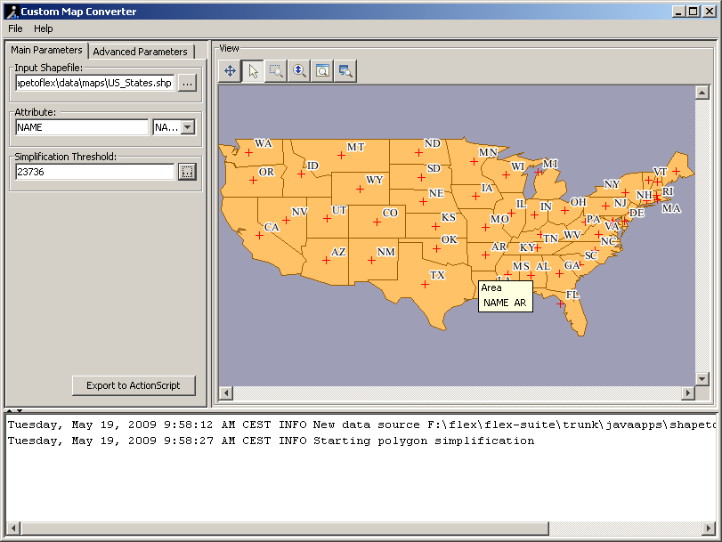
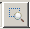

The barycenters of the map features are calculated approximately.
You can move a barycenter by clicking and dragging it to a new location.
When you export to ActionScript®
or save as a project, the new barycenter positions are saved in
a .shp file and will be reloaded
whenever you reload the map from the corresponding Shapefile or a
project file.
Hover over a barycenter to see the tooltip associated
with a barycenter or over a map feature to see the tooltip associated
with a map feature. The information shown in the tooltip comes from
the metadata in the .dbf file.
An example of a barycenter tooltip is shown in the following figure.

The available interactions with the map in the View pane are listed in the following table.
| Icon or key | Interaction |
|---|---|
 |
Pan the map in any direction. |
| Select map feature. | |
|  | Zoom in on map. |
| Zoom in continuously on the map. | |
| Fit the map to the View pane. | |
| Magnify the area around the cursor by 4x. | |
| CTRL+Arrow key | Select neighboring map feature in any direction. |